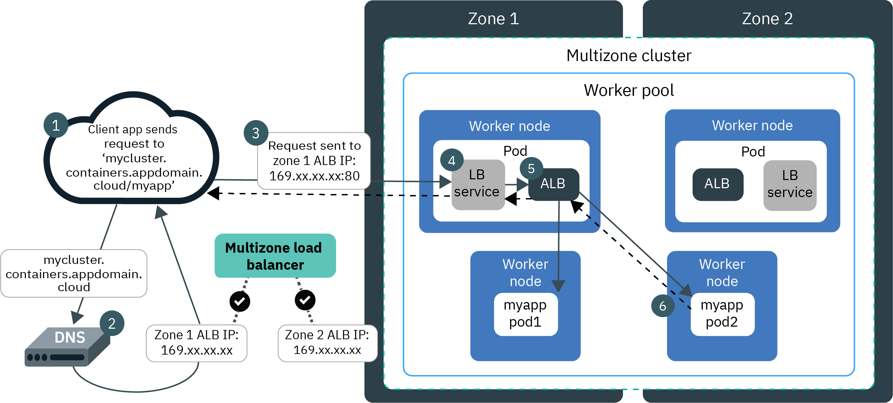

Ingress and Application Load Balancer (ALB)¶
Pre-requisites¶
Finish the Services, ClusterIP, NodePort and LoadBalancer labs:
- Guestbook Deployment
- Guestbook Service of type LoadBalancer
- Logged in to IBM Cloud account
- Connected to Kubernetes cluster
Network Administration¶
When you create a standard cluster in IBM Cloud Kubernetes Service (IKS), a portable public subnet and a portable private subnet for the VLAN are automatically provisioned. You need account permissions to list the subnets,
KS_CLUSTER_ID=$(ibmcloud ks cluster get --cluster $KS_CLUSTER_NAME --output json | jq -r '.id')
echo $KS_CLUSTER_ID
ibmcloud ks subnets --provider classic --output json | jq -r '.[] | select ( .properties.bound_cluster=='\"$KS_CLUSTER_ID\"' )'
{
"id": "2051509",
"type": "private",
"vlan_id": "2953608",
"ip_addresses": [],
"properties": {
"cidr": "29",
"network_identifier": "10.177.211.88",
"note": "",
"subnet_type": "secondary_on_vlan",
"display_label": "10.177.211.88/29",
"gateway": "10.177.211.89",
"bound_cluster": "bvmvv8vd0a5t7uq0eii0",
"datacenter": "dal10"
}
}
{
"id": "2506746",
"type": "public",
"vlan_id": "2953606",
"ip_addresses": [],
"properties": {
"cidr": "29",
"network_identifier": "169.61.252.0",
"note": "",
"subnet_type": "secondary_on_vlan",
"display_label": "169.61.252.0/29",
"gateway": "169.61.252.1",
"bound_cluster": "bvmvv8vd0a5t7uq0eii0",
"datacenter": "dal10"
}
}
or list the resources for the cluster,
$ ibmcloud ks cluster get --show-resources -c $KS_CLUSTER_NAME
Retrieving cluster remkohdev-test-iks119-2n-c1 and all its resources...
OK
Name: remkohdev-test-iks119-2n-c1
ID: bvmvv8vd0a5t7uq0eii0
State: normal
Status: -
Created: 2020-12-31T16:44:26+0000
Location: dal10
Pod Subnet: 172.30.0.0/16
Service Subnet: 172.21.0.0/16
Master URL: https://c111.us-south.containers.cloud.ibm.com:31710
Public Service Endpoint URL: https://c111.us-south.containers.cloud.ibm.com:31710
Private Service Endpoint URL: -
Master Location: Dallas
Master Status: Ready (2 days ago)
Master State: deployed
Master Health: normal
Ingress Subdomain: remkohdev-test-iks119-2-2bef1f4b4097001da9502000c44fc2b2-0000.us-south.containers.appdomain.cloud
Ingress Secret: remkohdev-test-iks119-2-2bef1f4b4097001da9502000c44fc2b2-0000
Ingress Status: healthy
Ingress Message: All Ingress components are healthy
Workers: 2
Worker Zones: dal10
Version: 1.19.6_1531
Creator: -
Monitoring Dashboard: -
Resource Group ID: fdd290732f7d47909181a189494e2990
Resource Group Name: default
Subnet VLANs
VLAN ID Subnet CIDR Public User-managed
2953606 169.61.252.0/29 true false
2953608 10.177.211.88/29 false false
The portable public subnet provides 5 usable IP addresses. 1 portable public IP address is used by the default public Ingress ALB. The remaining 4 portable public IP addresses can be used to expose single apps to the internet by creating public Network Load Balancer (NLB) services.
To list all of the portable IP addresses in the IKS cluster, both used and available, you can retrieve the following ConfigMap in the kube-system namespace listing the resources of the subnets,
kubectl get cm ibm-cloud-provider-vlan-ip-config -n kube-system -o yaml
apiVersion: v1
data:
cluster_id: bvlntf2d0fe4l9hnres0
reserved_private_ip: ""
reserved_private_vlan_id: ""
reserved_public_ip: ""
reserved_public_vlan_id: ""
vlanipmap.json: |-
{
"vlans": [
{
"id": "3009946",
"subnets": [
{
"id": "2471290",
"ips": [
"10.176.98.250",
"10.176.98.251",
"10.176.98.252",
"10.176.98.253",
"10.176.98.254"
],
"is_public": false,
"is_byoip": false,
"cidr": "10.176.98.248/29"
}
],
"zone": "dal10",
"region": "us-south"
},
{
"id": "3009944",
"subnets": [
{
"id": "2078743",
"ips": [
"169.46.16.242",
"169.46.16.243",
"169.46.16.244",
"169.46.16.245",
"169.46.16.246"
],
"is_public": true,
"is_byoip": false,
"cidr": "169.46.16.240/29"
}
],
"zone": "dal10",
"region": "us-south"
}
],
"vlan_errors": [],
"reserved_ips": []
}
kind: ConfigMap
metadata:
labels:
addonmanager.kubernetes.io/mode: Reconcile
kubernetes.io/cluster-service: "true"
name: ibm-cloud-provider-vlan-ip-config
namespace: kube-system
selfLink: /api/v1/namespaces/kube-system/configmaps/ibm-cloud-provider-vlan-ip-config
One of the public IP addresses on the public VLAN's subnet is assigned to the NLB. List the registered NLB host names and IP addresses in a cluster,
$ ibmcloud ks nlb-dns ls --cluster $KS_CLUSTER_NAME --output json
[
{
"clusterID": "bvmvv8vd0a5t7uq0eii0",
"nlbIP": "[\"169.46.16.243\"]",
"nlbIPArray": [
"169.46.16.243"
],
"nlbType": "public",
"nlbHost": "remkohdev-test-iks119-2-2bef1f4b4097001da9502000c44fc2b2-0000.us-south.containers.appdomain.cloud",
"secretNamespace": "default",
"nlbMonitorState": "None",
"nlbSslSecretName": "remkohdev-test-iks119-2-2bef1f4b4097001da9502000c44fc2b2-0000",
"nlbSslSecretStatus": "created"
}
]
And retrieve the NodePort via,
PORT=$(kubectl get svc helloworld -n $MY_NS --output json | jq -r '.spec.ports[0].nodePort' )
echo $PORT
You see that the portable IP address is assigned to the NLB. You can access the application via the portable IP address of the LoadBalancer NLB and service NodePort at http://\(PORTABLE_IP:\)PORT. But LoadBalancer also has limitations.
Ingress ALB¶
Ingress is a reverse-proxy load balancer and Kubernetes API object that manages external access to services in a cluster. You can also use Ingress to expose multiple app services to a public or private network by using a single unique route. The Ingress API also supports TLS termination, virtual hosts, and path-based routing.
Ingress consists of three components:
- Ingress resources
- Application load balancers (ALBs)
- A load balancer to handle incoming requests across zones. For classic clusters, this component is the multizone load balancer (MZLB) that IBM Cloud Kubernetes Service creates for you. For VPC clusters, this component is the VPC load balancer is created for you in your VPC.
To expose an app with Ingress, you must create a Kubernetes service and register this with Ingress by defining an Ingress resource. One Ingress resource is required per namespace where you have apps that you want to expose.
The Ingress resource is a Kubernetes resource that defines the rules for how to route incoming requests for apps. The Ingress resource also specifies the path to your app services. When you created a standard IKS cluster, an Ingress subdomain is already registered by default for your cluster. The paths to your app services are appended to the public route.
In a standard cluster on IKS, the Ingress Application Load Balancer (ALB) is a layer 7 (L7) load balancer which implements the NGINX Ingress controller. A layer 4 (L4) LoadBalancer service exposes the ALB so that the ALB can receive external requests to your cluster. The ALB routes requests to app pods in your cluster based on distinguishing L7 protocol characteristics, such as HTTP request headers.

Create an Ingress Resource for the HelloWorld App¶
Instead of using <external-ip>:<nodeport> to access the HelloWorld app, I want to access our HelloWorld aplication via the URL <subdomain>:<nodeport>/<path>.
To configure your Ingress resource, you need the Ingress Subdomain and Ingress Secret of your cluster. Both were already created by IKS when you created the cluster.
INGRESS_SUBDOMAIN=$(ibmcloud ks nlb-dns ls --cluster $KS_CLUSTER_NAME --json | jq -r '.[0].nlbHost')
echo $INGRESS_SUBDOMAIN
INGRESS_SECRET=$(ibmcloud ks nlb-dns ls --cluster $KS_CLUSTER_NAME --json | jq -r '.[0].nlbSslSecretName')
echo $INGRESS_SECRET
Or,
INGRESS_SUBDOMAIN=$(ibmcloud ks cluster get --show-resources -c $KS_CLUSTER_NAME --json | jq -r '.ingressHostname')
echo $INGRESS_SUBDOMAIN
INGRESS_SECRET=$(ibmcloud ks cluster get --show-resources -c $KS_CLUSTER_NAME --json | jq -r '.ingressSecretName')
echo $INGRESS_SECRET
Create the Ingress resource and change the hosts and host to the Ingress Subdomain of your cluster, and change the secretName to the value Ingress Secret of your cluster. You can use annotations like rewrite path to customize the Ingress resource. See https://cloud.ibm.com/docs/containers?topic=containers-ingress_annotation.
Find the Kubernetes version,
$ kubectl get nodes -o wide
NAME STATUS ROLES AGE VERSION INTERNAL-IP EXTERNAL-IP OS-IMAGE KERNEL-VERSION CONTAINER-RUNTIME
10.38.216.204 Ready <none> 18h v1.18.13+IKS 10.38.216.204 150.239.30.245 Ubuntu 18.04.5 LTS 4.15.0-128-generic containerd://1.3.9
10.38.216.208 Ready <none> 18h v1.18.13+IKS 10.38.216.208 150.239.30.252 Ubuntu 18.04.5 LTS 4.15.0-128-generic containerd://1.3.9
In version 1.18 syntax,
echo "apiVersion: extensions/v1beta1
kind: Ingress
metadata:
name: helloworld-ingress
annotations:
kubernetes.io/ingress.class: \"public-iks-k8s-nginx\"
spec:
tls:
- hosts:
- $INGRESS_SUBDOMAIN
secretName: $INGRESS_SECRET
rules:
- host: $INGRESS_SUBDOMAIN
http:
paths:
- path: /
backend:
serviceName: helloworld
servicePort: 8080" > helloworld-ingress.yaml
In version 1.19 syntax,
echo "apiVersion: networking.k8s.io/v1
kind: Ingress
metadata:
name: helloworld-ingress
annotations:
kubernetes.io/ingress.class: "public-iks-k8s-nginx"
spec:
tls:
- hosts:
- $INGRESS_SUBDOMAIN
secretName: $INGRESS_SECRET
rules:
- host: $INGRESS_SUBDOMAIN
http:
paths:
- path: /
pathType: Prefix
backend:
service:
name: helloworld
port:
number: 8080" > helloworld-ingress.yaml
The above resource will create an access path to the helloworld at http://$INGRESS_SUBDOMAIN:$PORT/.
You can further customize Ingres routing with annotations to customize the ALB settings, TLS settings, request and response annocations, service limits, user authentication, or error actions.
Make sure, the values for the hosts, secretName and host are set correctly to match the values of the Ingress Subdomain and Secret of your cluster. Edit the helloworld-ingress.yaml file to make the necessary changes,
Then create the Ingress for helloworld,
kubectl create -f helloworld-ingress.yaml -n $MY_NS
ingress.networking.k8s.io/helloworld-ingress created
To find the service port again,
PORT=$(kubectl get svc helloworld -n $MY_NS --output json | jq -r '.spec.ports[0].nodePort' )
echo $PORT
Try to access the helloworld API and the proxy using the Ingress Subdomain with the path to the service,
curl -L -X POST "http://$INGRESS_SUBDOMAIN:$PORT/api/messages" -H 'Content-Type: application/json' -d '{ "sender": "world3" }'
{"id":"40221ee9-06ac-4be2-97bc-2675c7cbb1e7","sender":"world3","message":"Hello world3 (direct)","host":null}
If you instead want to use subdomain paths instead of URI paths,
echo "apiVersion: extensions/v1beta1
kind: Ingress
metadata:
name: helloworld-ingress
annotations:
kubernetes.io/ingress.class: \"public-iks-k8s-nginx\"
spec:
tls:
- hosts:
- $INGRESS_SUBDOMAIN
secretName: $INGRESS_SECRET
rules:
- host: >-
$INGRESS_SUBDOMAIN
http:
paths:
- backend:
serviceName: helloworld
servicePort: 8080
- host: >-
hello.$INGRESS_SUBDOMAIN
http:
paths:
- backend:
serviceName: helloworld
servicePort: 8080" > helloworld-ingress-subdomain.yaml
Delete the previous Ingress resource and create the Ingress resource using subdomain paths.
kubectl get ingress -n $MY_NS
kubectl delete ingress helloworld-ingress -n $MY_NS
kubectl create -f helloworld-ingress-subdomain.yaml -n $MY_NS
curl -L -X POST "https://hello.$INGRESS_SUBDOMAIN/api/messages" -H 'Content-Type: application/json' -d '{ "sender": "world4" }'
{"id":"6cb0489e-e290-4b98-9fd4-c4a303011898","sender":"world4","message":"Hello world4 (direct)","host":null}
Next¶
Next, go to Network Policy.